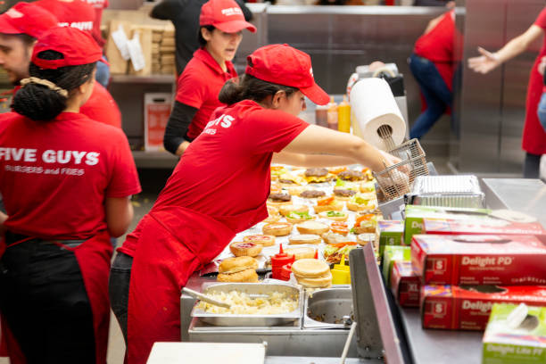
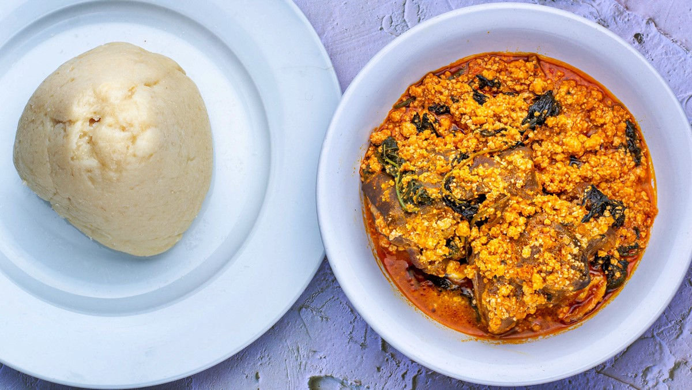
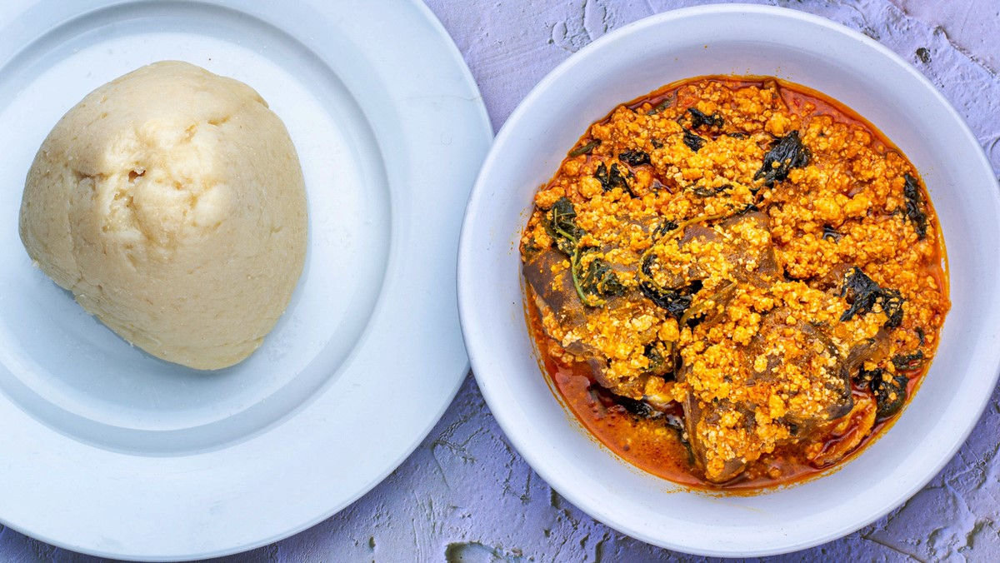
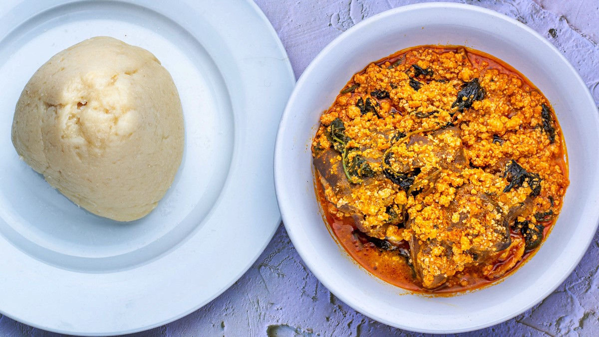

 


A dinstinctive dining destination inspired by culture.
Our menu features a wide array of traditional Nigerian dishes, each crafted with care and the finest ingredients. From Jollof Rice bursting with vibrant tomato flavors to smoky Suya skewers and the comforting warmth of Pounded Yam, we offer a culinary journey through Nigerias diverse regions. Each dish is a reflection of our dedication to preserving the authentic taste and cooking methods that have been passed down through generations.
Menu
